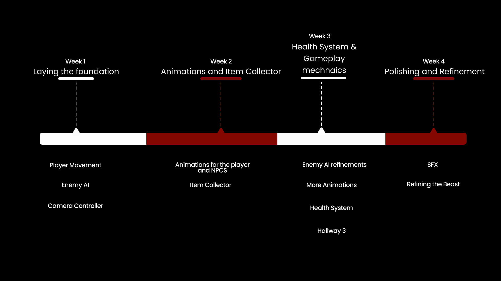

Storge

A 2D pixel survival-horror game adapting a fixed narrative script — waypoint patrol AI with chase states, proximity-scaled audio, and real-time health feedback.
September 2023 — January 2024
A 2D pixel survival-horror game adapting a fixed narrative script — waypoint patrol AI with chase states, proximity-scaled audio, and real-time health feedback.
September 2023 — January 2024
Storge was built for IAT 313, a senior narrative-design course at SFU. The brief: adapt a narrative script into a playable medium, with the game itself carrying the story rather than illustrating it.
Storge is a 2D pixel survival-horror game where the player, June, a detective, investigates a string of disappearances tied to her old orphanage. Inspired by Ib, it's built around exploration, light puzzle-solving, and enemy avoidance, largely set in the Veil — an alternate, nightmarish version of the orphanage.
Core Gameplay Mechanics; Player and NPCS: Built player movement on Unity's Rigidbody2D, normalizing diagonal input so movement speed stays consistent regardless of direction — avoids the classic diagonal-speed bug where unnormalized input makes diagonal movement faster than cardinal movement.
Animations: Implemented walk and idle animation states with directional sprite flipping driven by input direction, keeping the character oriented correctly without doubling the sprite sheet for left/right variants.
Health System: Built a health system with a UI bar bound directly to the player's current HP value, so damage feedback updates immediately on hit rather than being polled per frame.
The Beast/Antagonist/Enemy : Built the Beast's AI on a waypoint-based patrol system with obstacle avoidance and pathfinding, transitioning to a chase state once player-detection sensors trigger. Contact damage escalates the longer the player stays in range, and attack/footstep SFX pitch and volume scale with proximity to reinforce how close the threat actually is.
Sound Effects: Layered footstep SFX, damage feedback synced to hit frames, and state-specific audio cues for the Beast on top of ambient background scoring, so audio state tracks gameplay state rather than playing on a fixed loop.

We settled on 32x32 pixel art for a balance of simplicity and detail, translating the original concept art for each character into pixel form with a dedicated color palette per character. Designs stayed close to the source material to preserve the story's 1980s small-town setting, with revisions made to the Beast and new designs created for supporting characters. We also worked in symbolic detail — like flower meanings — tying character design back into the narrative.
Storge was my first time building a complete interactive system around someone else's fixed narrative rather than an original concept — the story already being locked forced tighter integration between gameplay pacing and story beats than a from-scratch design would have. Wiring together player movement, an AI-driven antagonist, and a real-time health/audio feedback loop was an early rep at getting separate systems (movement, AI, UI, audio) to work as one coherent player experience — the same integration problem I later solved at a much larger scale in the GAS Melee Combat System.